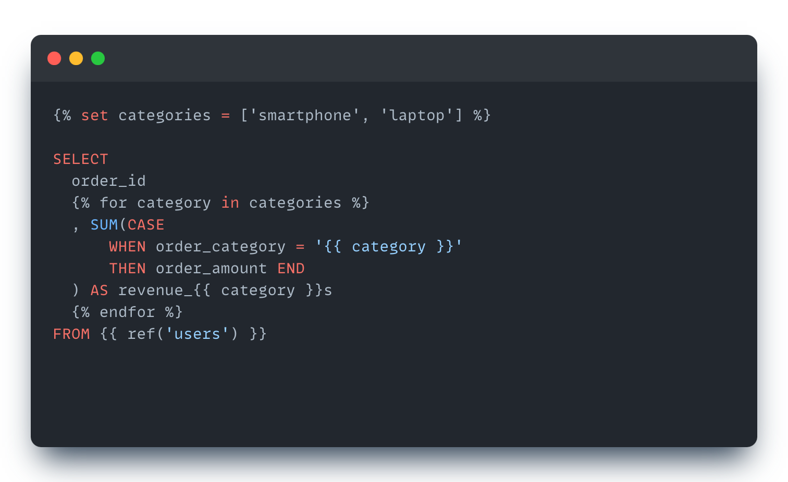

Every {{ ref('stg__customers') }}, every {% if is_incremental() %}, every -- {{ this }} you’ve seen so far in this course is Jinja, a Python templating language that dbt uses to turn your SQL files into… more SQL. Stage 5 is where you stop consuming Jinja and start writing it.

Jinja has exactly three syntactic forms. Knowing them is 70% of writing macros.
| Delimiter | Used for | Renders to |
|---|---|---|
{{ ... }} |
Expressions. Print a value into the output. | The string representation of whatever’s inside. |
{% ... %} |
Statements. Set variables, control flow (if, for, set, macro). |
Nothing — the statement runs but produces no output. |
{# ... #} |
Comments. Ignored entirely. | Nothing. Doesn’t appear in compiled SQL. |
You’ve already seen all three in this project, just maybe not consciously:
{{ ref('stg__orders') }} -- expression — produces a table name
{% if is_incremental() %}where ...{% endif %} -- statements — control flow
{# this is a Jinja comment, never reaches the warehouse #}
The mental model: dbt’s Jinja preprocessor walks the SQL file character by character. When it sees a delimiter, it switches into “Jinja mode” and evaluates whatever’s inside. When the delimiter closes, it goes back to copying SQL. The output is what gets sent to the warehouse.
{% set %}{% set flavors = ['chocolate', 'vanilla', 'strawberry'] %}
{% set today = '2024-03-15' %}
select * from orders where order_date = '{{ today }}'
Setting a variable is a statement (no output). Using it is an expression. The difference matters: {% set x = 1 %} doesn’t print anything; {{ x }} prints 1.
If/else:
{% if target.name == 'prod' %}
where date >= current_date - interval '90 days'
{% else %}
where date >= current_date - interval '7 days'
{% endif %}
The whole block must be wrapped in {% if ... %} ... {% endif %}. The branch evaluates and produces SQL; the if/else machinery itself doesn’t.
For-loops:
{% for status in ['placed', 'shipped', 'completed'] %}
sum(case when status = '{{ status }}' then 1 else 0 end) as {{ status }}_count
{% if not loop.last %},{% endif %}
{% endfor %}
loop.last is a built-in Jinja variable inside for blocks — true on the last iteration, false otherwise. Useful for handling commas in column lists.
A macro is a Jinja function that can be called from anywhere in the project. The body produces text that gets inserted at the call site.
{% macro cents_to_dollars(column_name, decimal_places=2) %}
round( 1.0 * {{ column_name }} / 100, {{ decimal_places }} )
{% endmacro %}
Calling it:
select
{{ cents_to_dollars('amount') }} as amount,
{{ cents_to_dollars('refund_amount', decimal_places=4) }} as refund_amount
from raw_payments
Compiles to:
select
round( 1.0 * amount / 100, 2 ) as amount,
round( 1.0 * refund_amount / 100, 4 ) as refund_amount
from raw_payments
The macro is just text substitution. The dollar-conversion logic is now in one place. Need to change the rounding policy across the project? One file edit. That’s the DRY win — Don’t Repeat Yourself.
Macros go in dbt_project/macros/*.sql. Filename and macro name don’t have to match, though convention is one macro per file with matching names:
dbt_project/macros/
├── cents_to_dollars.sql
├── ...
dbt scans macro-paths: (default macros/) at parse time and registers every {% macro ... %} block it finds. After parse, the macro shows up in target/manifest.json under macros.<package>.<name> and is callable from any model, test, or analysis.
-A subtle but useful trick: a leading or trailing - inside a delimiter trims whitespace on that side.
{% macro cents_to_dollars(column_name) -%}
round( 1.0 * {{ column_name }} / 100, 2 )
{%- endmacro %}
The -%} strips trailing whitespace, the {%- strips leading whitespace. Without those dashes, the macro’s expansion would have extra newlines around it that show up in compiled SQL. For one-line expressions like cents_to_dollars, the trim makes the output read like a single inline expression instead of a multi-line block.
The next four exercises all build on this:
first_macro writes the cents_to_dollars macro you just saw and refactors stg__payments to use it.state_selection uses Jinja-rendered {{ this }} in the same way Stage 4’s incremental models did.exposures is mostly YAML, but the YAML uses ref('fct_orders') which is a Jinja expression evaluated by dbt at parse time.dbt_utils_install installs a package whose entire content is Jinja macros.Knowing the three delimiters, what {% set %} and {% if %} and {% macro %} mean, and how text substitution works is enough to make sense of every Jinja construct you’ll meet in the rest of Stage 5.
{{ }} instead of {% %}. {{ if x %}} doesn’t work — if is a statement, not an expression. Use {% if x %} for control flow.{% endif %} / {% endfor %} / {% endmacro %}. Jinja blocks need explicit closers, just like HTML tags.macros/. dbt only scans macro-paths: for macros. A {% macro %} block inside a model file is technically callable by that model only and is a smell — keep macros in macros/.Press n to start the exercise.